Final Art 025 · 静态材质测试
这一轮先固定材质身份：透明外膜、青绿色内部体积、柔和连续层次和边缘厚度。候选已拆成吸收、透射、反射、厚度和局部折射字段；没有运动、实时物理或生产迁移。
READY FOR HUMAN REVIEW · 只做静态材质判断
主候选与参考
主候选 · optical field study

新候选：从正式基线拆出厚度、透射、反射和局部折射，浅色背景为主观看域。
本轮的明确目的
判断新候选是否已经进入 Final Art 025 的视觉邻域，然后再决定是否值得继续拆分成可运行的 GPU 材质。主结构不依赖双核；点光只作为参考中很小的细节。
- 025：主要材质目标。
- 050：只看厚度、深度和内部云层。
- K2：只看冻结端点，不用来定义本轮材质。
- M1 neutral：输入证据，不是成品。
同尺度对比
Final Art 025

主参考，保留界面上下文。
新候选
吸收 / 透射 / 反射 / 厚度字段。
旧正式基线（已对齐）

与新候选统一球径和画布，用于判断拆分是否损失身份。
Final Art 050

只辅助观察深度与厚度。
新候选的背景与字段检查
浅色主观看域
主候选。最接近 025 的阅读环境。
深色背景
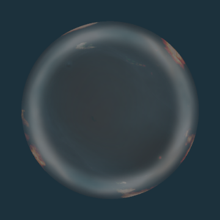
检查透射和边缘膜是否真实参与。
冷暖分屏
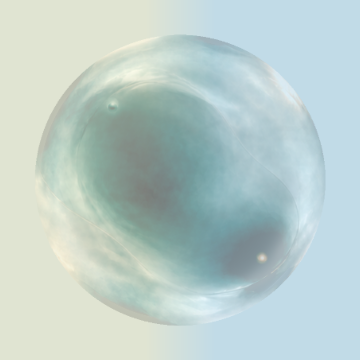
检查材质是否只依赖单一底色。
棋盘背景
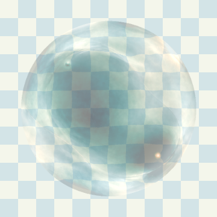
检查厚度、局部折射和透明度。
吸收 / 光学深度

内部颜色随厚度衰减。
反射光

把外膜亮度与内部体积分开。
厚度

厚度真正参与最终像素输出。
局部折射

由局部密度梯度产生小幅偏移。
四背景厚度均值匹配对照
浅色 · 均值厚度
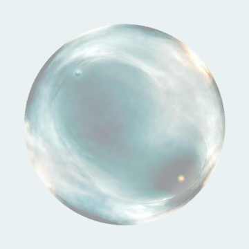
保留平均吸收量，移除空间厚度分布。
深色 · 均值厚度
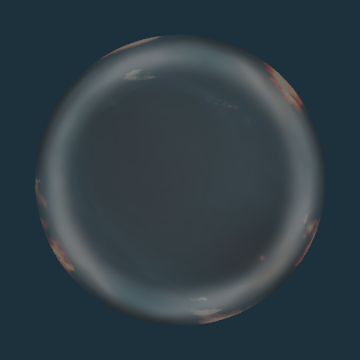
检查厚度空间分布是否仍然可见。
冷暖分屏 · 均值厚度
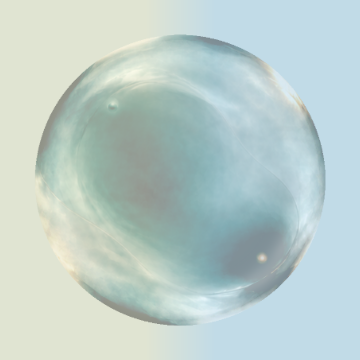
排除单纯背景亮度造成的差异。
棋盘 · 均值厚度
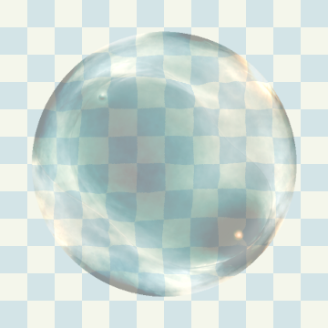
检查透明度和局部折射的稳定性。
四背景局部近景
浅色近景
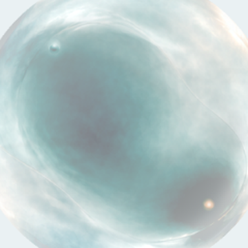
观察内部云层、边缘和点位。
深色近景
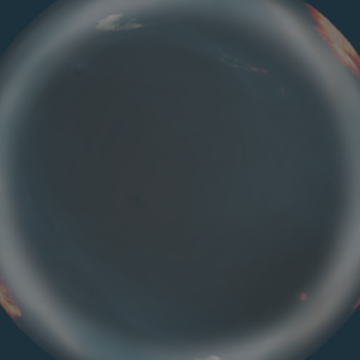
观察反射是否盖过体积。
冷暖分屏近景
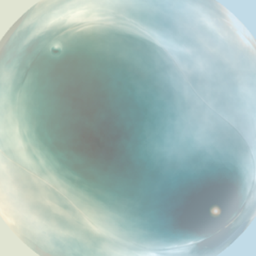
观察底色变化下的连续性。
棋盘近景
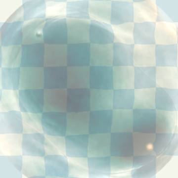
观察折射偏移和厚度边界。
层诊断：为什么不能直接全层相加


下面是素材层的贡献查看器。它不是主候选，也不宣称是正确的生产合成。默认只显示背景板，因为背景板已经包含了正式静态材质。
自查结论：把 00 与 01–11 直接叠加会重复计算已烘焙材质，出现过亮噪纹和黑色带状结构。当前主候选已经从导出的 optical / reflected / thickness / refraction / silhouette / film / detail PNG 回读重建；层叠图仍只用于解释错误路线。
人工裁决点
请只判断材质身份，不判断动效。
如果新候选已经接近 025，下一步再接入真实 GPU 静态 pass；如果仍然不接近，继续改参数没有意义，应重新制作材质字段，而不是继续堆噪声、弧线或体积步进。